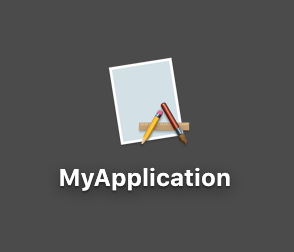

アプリケーションバンドル（ .app ）を作成する
ソースコードをリリース版でビルドし、作成したアプリケーションバンドル（.appファイル）をコピーして任意の場所に置き、実行できるようにする。
リリース版/デバッグ版を切り替えビルドする
ビルドの設定（スキーマ）を定義するフォームを開く。
Xcodeメニュー → [Ptoduct] → [Scheme] → [Edit Scheme...] → [Run]タブ
Build configuration の Debug/Release を切り替え、ビルドを行う。
Project Navigator → Productsフォルダ の「MyProject.app」を選択状態にし、 Show in Finder により中身を表示する。
Debugフォルダ/Releaseフォルダのそれぞれの下にアプリケーションバンドル（.app）が作成される。実体はファイルなので、コピーや移動で任意のフォルダに置くことができる。
ディスクトップにおけば、アイコンの下にアプリケーション名が表示され、クリックすればアプリケーションが起動する。
アイコンを右クリックし、コンテキストメニューから [パッケージの内容を表示]を選ぶと、アプリケーションバンドルの構成を見ることができる。
アプリケーション名の変更方法
アプリケーション名（アプリケーションバンドル名）は、Build Settings の Product Name で定義される。初期値は $(Target_NAME) になっているのでプロジェクト名と同じになる。
これを違った名前に変更してみる。
Build Settings の Product Nameを「MyApplication」に直接書き換える。（同時に、Product Moduke Nameが自動的に同名に変わる）
ビルドを行うと、「MyApplication」という名前のアプリケーションバンドルが新たに作成される。
アプリケーション名が新しい名前になっている。

（注意）
ネットの情報によれば次の方法で変更できるとあった。
アプリケーションバンドル名は、info.plistの設定値により決まる。
まず、Bundle display nameがあればその値。なければ、Bundle nameの値がアプリケーションバンドル名になる。この値を変えれば、アプリケーションバンドル名を変えることができる。
そこで、info.plistを修正し、
項目 Bundle display nameを追加し「NewBundleDisplayName」をセット、Bundle nameは「NewBundleName」に変更してビルドを行なってみたが、何も変わらなかった。
何かやり方に問題があるのかもしれない。